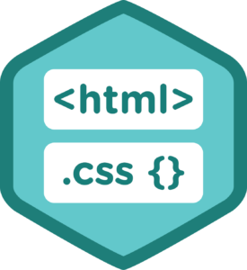

Project One

You're more than welcome to vist us! This website was designed in order to learn front end technologies such as: HTML and CSS codes. The reason behind this is that More than half of all jobs in the top income show significant demand for coding skills.
"Web design is tricky. One has to take a lot of things into account when designing a website, from visual appearance (how the website looks) to functional design (how the website works). To simplify the task, we’ve prepared this guide."
"In this article, we’ll focus on the main principles, heuristics, and approaches that will help you to create a great user experience for your website. We’ll start with global things, like the user journey (how to define the “skeleton” of the website) and then work down to the individual page (what should be considered during web page design). We’ll also cover other essential aspects of design, such as mobile considerations and testing."
People often use the term “information architecture” (IA) to mean the menus on a website. But that’s not correct. While menus are a part of IA, they are only one aspect of it. IA is all about the organization of information in a clear and logical way. Such organization follows a clear purpose: helping users to navigate a complex set of information. Good IA creates a hierarchy that aligns with user’s expectations. But good hierarchy and intuitive navigation don’t happen by chance. They are a result of proper user research and testing. There are a number of ways to research user needs. Often, an information architect will take an active part in user interviews or card sorting, where the architect would hear of user expectations directly or see how prospective users would categorize a variety of information groups. Information architects also need access to the results of usability tests to see whether users are able to navigate efficiently.
A menu structure would be created based on the results of user interviews, and card sorting would be tested for whether it satisfies the user’s mental model. UX researchers use a technique called “tree testing” to prove that it will work. This happens before designing the actual interface. Continue Reading the orginal post on Adobe Blog